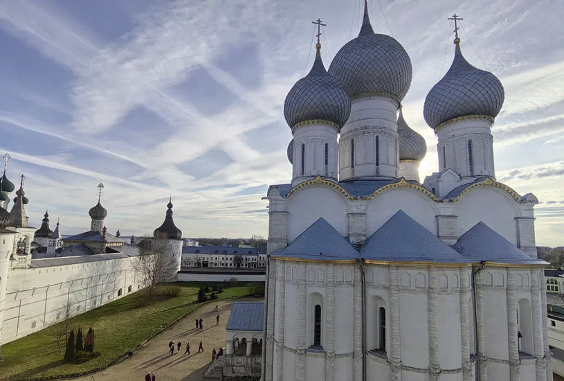
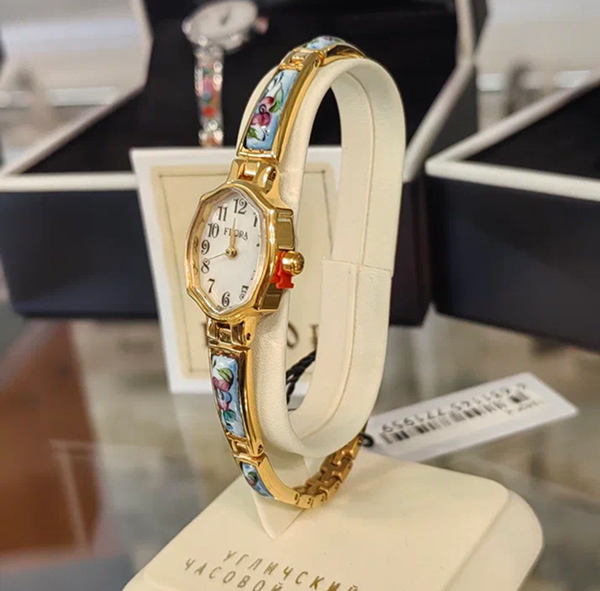
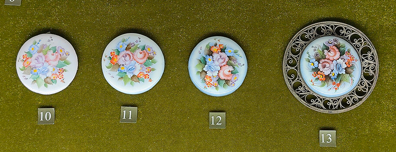
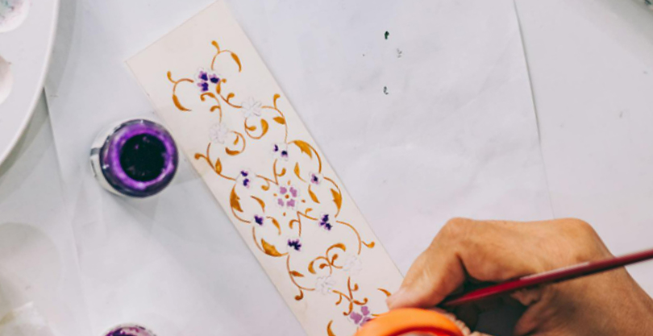
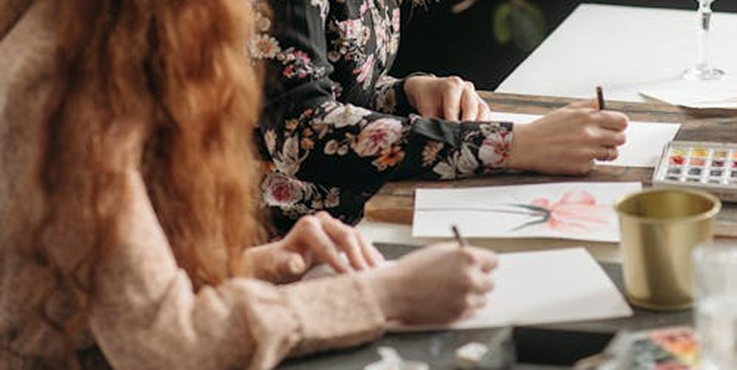

Наша историяО нас
«Ростовская эмаль» - производитель ювелирных изделий с перегородчатой эмалью в Ростове Великом. Мы специализируемся на создании украшений, икон, нательников, брошей, шкатулок и сувениров по уникальной технологии финифти.
Наша миссия - возвратить один из древнейших промыслов России в обиход современного человека и показать, что Финифть, может храниться не только “На полке, у бабушки”, но и быть прекрасным интерьерным и повседневным решением, которое выделит вас из толпы.
Ассортимент
Ассортимент компании «Ростовская эмаль» охватывает классические мотивы (иконопись, орнаменты, пейзажи) и современные дизайны. Продукция гипоаллергенна, устойчива к износу, воде и механическим воздействиям. Каждое изделие сертифицировано, сопровождается паспортом подлинности.
Мы сохраняем традиции ростовских иконописцев, обучая новых мастеров. Производство организовано совместно с Ростовскими мастерами письма по эмали. Доставка по России и миру через онлайн-магазин и партнёров. Обращайтесь за оптовыми поставками или индивидуальными заказами по адресу укзаанному в контактах.
Что такое финифть
Ростовская финифть - это русский народный художественный промысел из Ростова Великого, где делают миниатюры на эмали.
Обычно это украшения и сувениры: броши, серьги, колье, иконы, шкатулки с тонкой живописью.
Техника появилась в XVIII веке и связана с росписью по металлической основе, покрытой эмалью.
Главная особенность финифти - яркие, очень тонкие и долговечные изображения, которые расписывают вручную.

Технология изготовления
Технология изготовления Ростовской финифти сочетает ювелирное мастерство и живопись, создавая вечные украшения с яркими, не выцветающими красками.
Процесс начинается с подготовки основы: медной, серебряной или золотой пластины диаметром 5–20 см тщательно очищают, обезжиривают и покрывают тонким слоем прозрачной эмали - грунтом для адгезии.
Мастер переносит эскиз узора: цветы, птицы, библейские мотивы или геральдика. Затем наносятся перегородки - ключевой элемент. Из серебряной или медной проволоки толщиной 0,1–0,3 мм формируют стенки ячеек, припаивая их микропаяльником при 600–700°C. Перегородки задают контуры, не давая краскам смешиваться.
Эмалевые краски готовят из порошков: кварцевый песок, поташ, оксиды металлов (кобальт для лазури, медь для малахита, золото для рубина). Смесь растирают в ступке, просеивают, разводят гуммиарабиком.

Ссылка
В ячейки наносят эмаль кисточкой или пипеткой. Изделие ставят в муфельную печь на 20–30 минут при 700–800°C. Эмаль плавится, заполняя перегородки, приобретая глянец. После остывания дефекты исправляют, шлифуют.
Процесс многослойный: 5–15 обжигов для глубины цвета - прозрачные слои для сияния, непрозрачные для насыщенности.
После финального обжига поверхность полируют на войлочных кругах с пемзой, триполем и охрой, добиваясь зеркального блеска. Иногда наносят холодный лак для защиты.
Готовое изделие - иконный оклад, крест, брошь или поднос - переливается, словно драгоценный камень. Финифтъ устойчива: эмаль не трескается, не тускнеет от времени, света или влаги.
Онлайн мастер-классы
Онлайн мастер-классы по изготовлению финифти проводятся раз в полгода в групповом формате. Вы можете записаться на доступную дату, указав уровень подготовки и наличие базовых инструментов.
Компания предоставит материалы, инструкции и доступ к трансляции. В итоге вы освоите ключевые этапы, создадите пробное изделие дома и получите сертификат. Идеально для начинающих и удалённых учеников.
Бесплатная консультация.
Записаться на мастер-класс